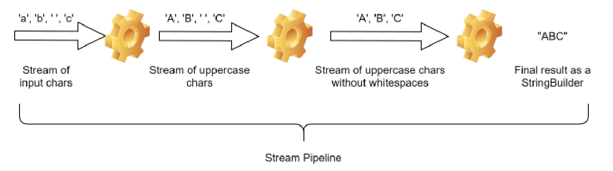

The stream pipeline shown in the above image can be coded as follows:
List<Character> al = List.of('a', 'b' , ' ', 'c');
Stream<Character> allCharsStrm = al.stream();
Stream<Character> uppercaseStrm = allCharsStrm.map(ch ->
Character.toUpperCase(ch));
Stream<Character> onlyRealCharsStrm = uppercaseStrm.filter(ch ->
!Character.isWhitespace(ch));
StringBuilder finalString = onlyRealCharsStrm.collect( StringBuilder::new ,
(s, ch) -> s.append(ch), (s1, s2) -> s1.append(s2));
System.out.println(finalString);Don’t worry about the method names and the arguments passed to them right now. Focus on the following points instead:
- The initial stream is being created from a
Listof characters. The list is therefore, the source of the initial stream. - At each step except the last one, the stream undergoes transformation such that the output is still a stream. Operations that transform a stream into a new stream are called intermediate operations.
- The last step does not produce a stream but a
StringBuilderobject. This is the final result of the stream pipeline. The last operation is called the terminal operation. - Note that in the above image, all the elements of the stream seem to flow